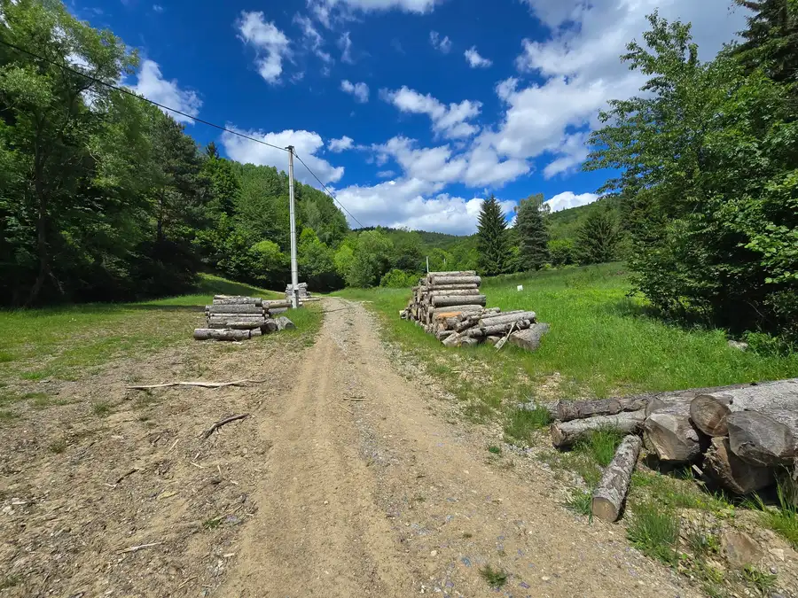
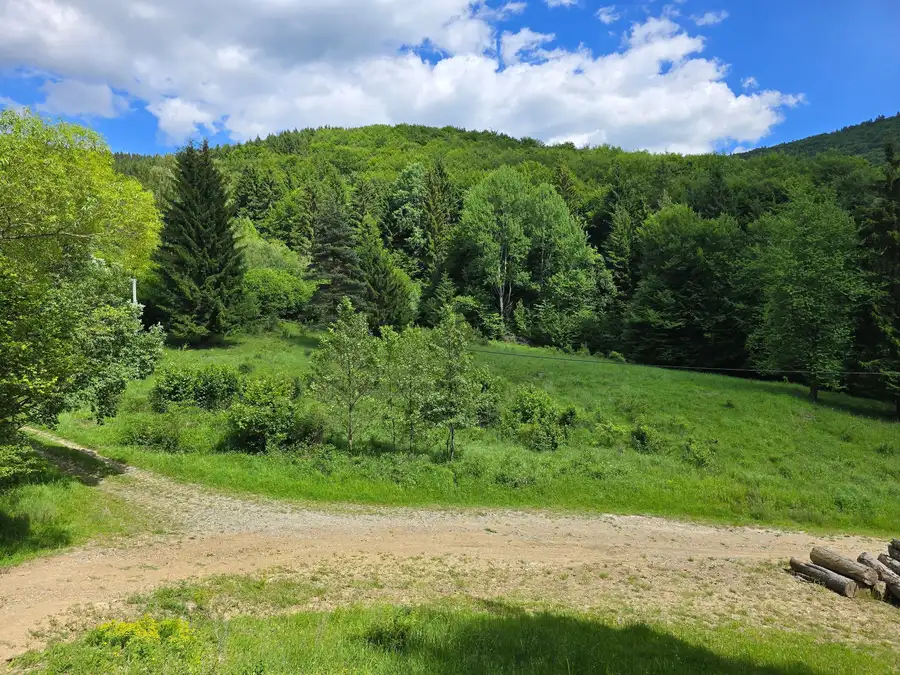
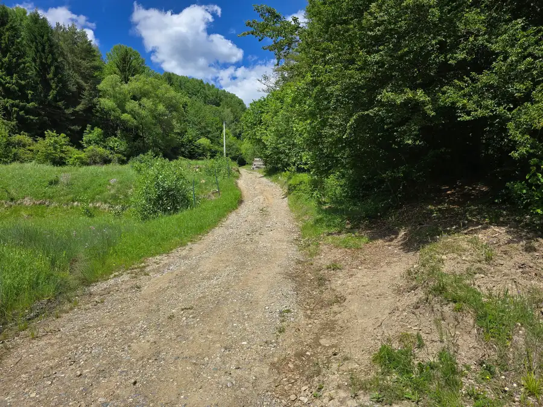
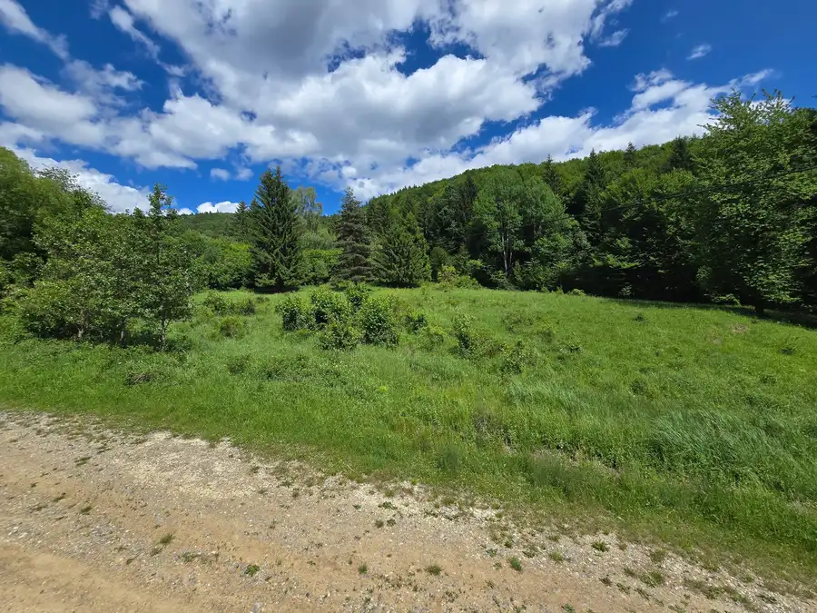
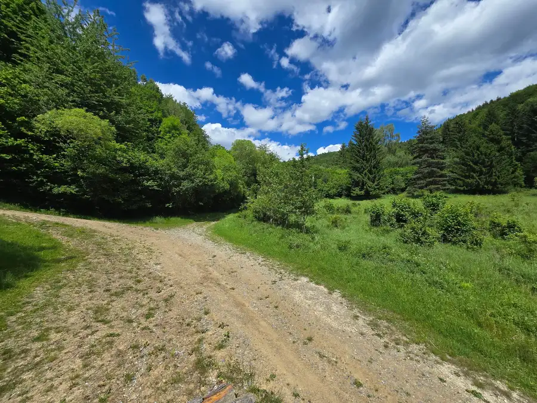
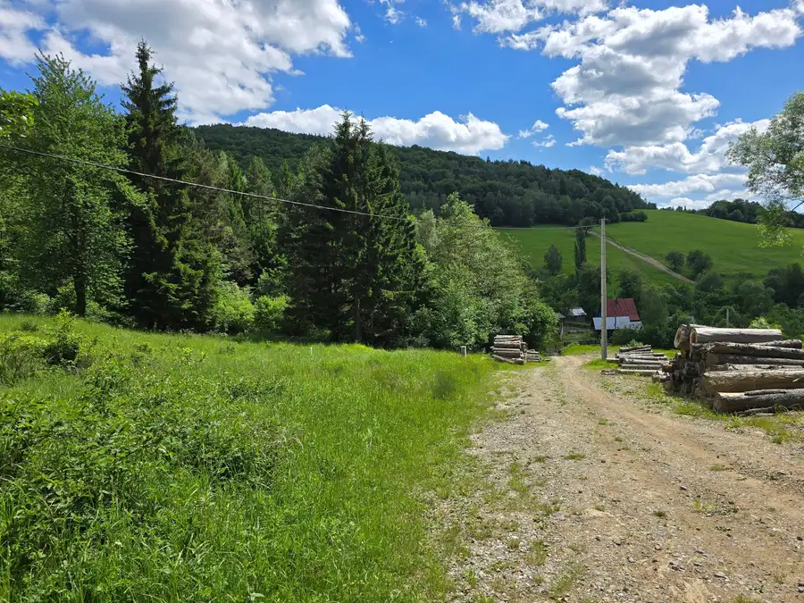
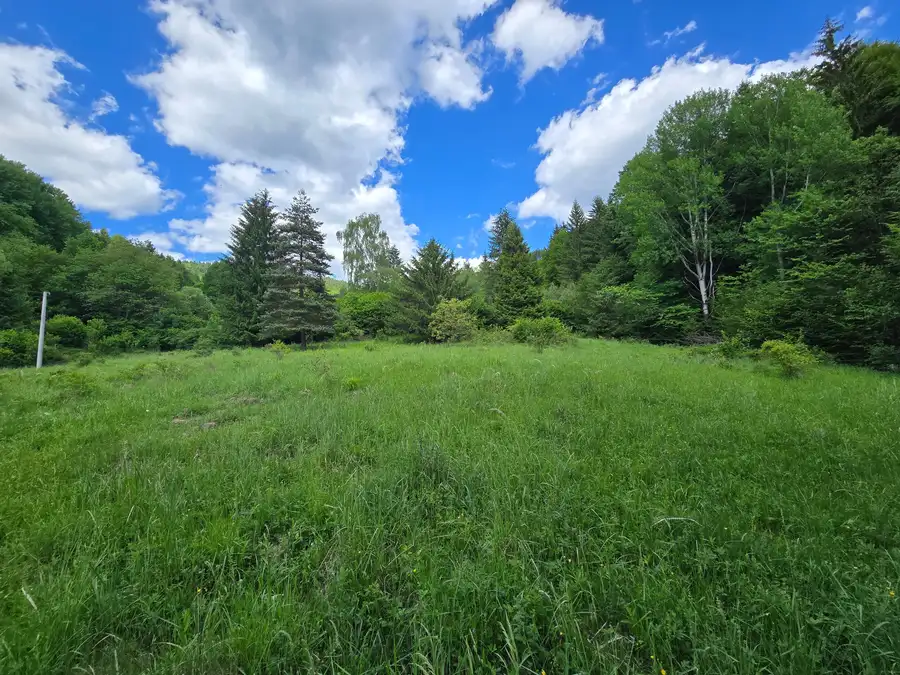

Na predaj: Výnimočný rekreačný pozemok s projektom na 4 chaty, 1319m2 – Horná Mariková
Horná Mariková








- Plocha1319 m²
O nehnuteľnosti
Hľadáte miesto, kde sa spája absolútny pokoj, panenská príroda a nádherné výhľady? Alebo hľadáte skvelú investičnú príležitosť s obrovským potenciálom?Exkluzívne ponúkame na predaj rozsiahly rekreačný pozemok v rázovitej a vyhľadávanej obci Horná Mariková, okres Považská Bystrica. Pozemok je vďaka svojmu rozdeleniu ideálny pre developera ako celok, ale ponúka aj možnosť kúpy samostatnej parcely pre individuálneho záujemcu.Základné informácie a parametre: * Celková výmera: 6 776 m² * Umiestnenie: Mimo zastavaného územia obce (extravilán) – zaručuje maximálne súkromie a nerušený kontakt s prírodou. * Prístup: Bezproblémový, po spevnenej prístupovej ceste. * Výhľady: Panoramatické výhľady na okolitú prírodu a lesy.Inžinierske siete (IS): - Elektrina: Nachádza sa na hranici pozemku, čo zaručuje bezproblémové budúce pripojenie. - Voda a odpad: Vzhľadom na polohu mimo zastavaného územia je v projekte schválené a plánované do budúcna nezávislé riešenie – vlastná vŕtaná studňa a ekologická žumpa pre každý objekt (siete zatiaľ nie sú vybudované).Pripravenosť na výstavbu a developerský potenciál:Veľkou výhodou tohto pozemku je, že najnáročnejšiu časť prípravy máte úspešne za sebou:Geometrický plán: Pozemok je už oficiálne rozdelený na 4 samostatné parcely s vyriešenou vnútornou prístupovou cestou. Projektová dokumentácia v cene: K dispozícii je hotový projekt s vizualizáciou na výstavbu 4 rekreačných zariadení (štýlové drevenice, zruby alebo rekreačné chalupy).Cenník a možnosti kúpy:Majiteľ ponúka flexibilné možnosti kúpy. Môžete investovať do celého projektu, alebo si vybrať len jeden samostatný pozemok: 1. Kúpa celého pozemku (6 776 m²) je 277.816 € – Ideálne pre developera: Zvýhodnená cena: 41 € / m² s DPH 2. Kúpa samostatnej parcely (sólo pozemok): Ak máte záujem len o jeden pozemok na výstavbu vlastnej chaty, je možné odkúpiť parcely aj jednotlivo. Cena pri kúpe samostatnej parcely: 46 € / m² s DPH-pozemok č.1 - výmera 1654 m2 ( 76.084 € )-pozemok č.2 - výmera 1871 m2 ( 86.066 € )-pozemok č.3 - výmera 1509 m2 ( 69.414 € )-pozemok č.4 - výmera 1319 m2 ( 60.674 € )Lokalita a dostupnosť:Horná Mariková ponúka dokonalý únik od mestského ruchu, čistý vzduch a skvelé možnosti na turistiku, cykloturistiku či hubárčenie, no zároveň výbornú dostupnosť do miest: Považská Bystrica (okresné mesto): iba 18 km Žilina (krajské mesto): 52 kmTento projekt je skvelý v tom, že nemusíte strácať čas s geometrickými plánmi ani s vymýšľaním projektov. Všetko je pripravené. Elektrina na hranici pozemku a schválené riešenia pre vodu a odpad vám otvárajú dvere k rýchlej realizácii. Vzhľadom na cenu vrátane DPH ide o veľmi atraktívnu ponuku pre firmy aj súkromné osoby. Pre viac informácií, nahliadnutie do geometrického plánu, projektovej dokumentácie alebo pre dohodnutie obhliadky ma neváhajte kontaktovať. Aktuálna UPI z obce Horná Mariková !Skvelý podnikateľský zámer, tradične drevenice v takomto krásnom prírodnom prostredí sú dnes veľmi žiadané, či už ako luxusné chaty na rodinný relax, alebo ako investičné nehnuteľnosti na ďalší prenájom.Kontakt:Telefón: +421 905 206 838E-mail: robert.maliar@gmail.com
Parametre
- Druh
- Rekreačný pozemok
- Dátum zverejnenia
- 20. 05. 2026
- Elektrina
- Pri pozemku - 230 V
- Odpadové vody
- Nedostupné
- Plocha pozemku
- 1319 m²
- Plyn
- Nedostupné
- Pripravenosť k výstavbe
- Schválené v územnom pláne
- Terén pozemku
- Mierne svahovitý
- Typ
- Predaj
- Voda
- Nedostupné